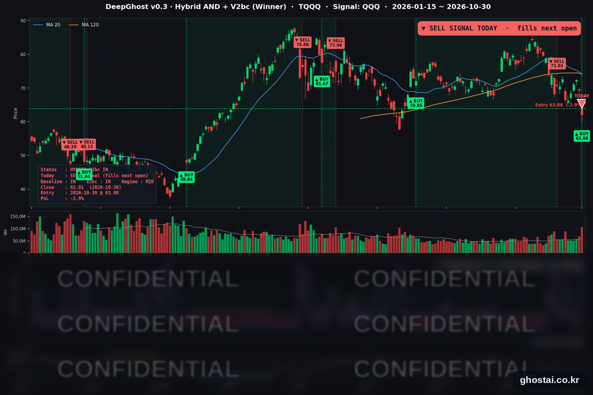

인텔 실적 쇼크에 나스닥 2.86% 하락, TQQQ 매도 신호 발생
· Ghost.AI 데일리 리포트
👻 매일 시그널과 히스토리를 홈페이지에서 한눈에 → www.ghostai.co.kr
회원 페이지 안내 — 회원 가입하시면 커버리지 전 종목의 원본 시그널과 분석 레포트를 매일 확인하실 수 있습니다. 회원 페이지는 블로그·유튜브보다 먼저 업데이트됩니다. 지금 베타 회원을 받고 있으며, 이메일과 필명만으로 가입하실 수 있고 서비스 사용료는 받지 않습니다. 이메일 확인 후 바로 이용하실 수 있습니다.
인텔이 4분기 매출·이익 전망을 시장 예상보다 크게 낮게 내놓으면서 반도체·하드웨어주가 함께 크게 내렸고, 나스닥 종합은 2.86%, QQQ 는 3.47% 내려 6월 5일 이후 가장 큰 하루 하락을 기록했습니다. 연준 위원들이 추가 인상을 주장했는데도 10년물 금리는 4.929% 로 내렸습니다. 전략은 금요일 시가에 TQQQ 를 매수했지만 같은 날 매도 신호가 나와, 11월 2일(월) 미국 장 시가에 매도합니다.
📊 오늘의 매매 신호
| 항목 | 내용 |
|---|---|
| 오늘의 신호 | 🔴 전략 매도 신호 발생 — 전략은 다음 거래일(11월 2일 월) 미국 장 시가에 TQQQ 를 전량 매도합니다 (한국시간 11월 2일 오후 11:30 — 11월 1일 미국 서머타임 종료) |
| 포지션 상태 | 매도 신호 발생 (체결 전) |
| 보유 기간 | 2026-10-30 ~ 2026-10-30 (10월 30일 시가 매수) |
| 진입가 → 금요일 종가 | $63.88 → $62.01 |
| 이번 거래 전략 수익률 | 10월 30일 종가 기준 -2.93% (최종 수익률은 월요일 시가로 정해집니다) |
TQQQ 시그널 — IN POSITION (매도 신호 발생)
현재 상태: 매도 신호 발생, 11월 2일(월) 시가 매도 예정 | 10월 30일 종가 기준 -2.93%

전략은 29일에 낸 매수 신호에 따라 30일(금) 미국 장 시가 63.88달러에 TQQQ 를 매수했습니다. TQQQ 는 이날 전일 종가보다 7.76% 낮게 출발했고, 장중 한때 13.44% 까지 내렸다가 10.47% 내린 62.01달러로 마감했습니다. 장 마감 기준으로 전략에 매도 신호가 나와, 전략은 다음 거래일인 11월 2일(월) 시가에 TQQQ 를 전량 매도합니다. 금요일 종가 기준 손익은 -2.93% 이고, 최종 손익은 월요일 시가로 정해집니다. 매도가 끝나면 전략은 다시 매수 신호가 나올 때까지 현금으로 보유합니다.
| 날짜 | TQQQ 종가 | 하루 등락률 | 10/23 종가 대비 |
|---|---|---|---|
| 10/26(월) | $68.43 | +3.23% | +3.23% |
| 10/27(화) | $71.04 | +3.81% | +7.17% |
| 10/28(수) | $72.36 | +1.86% | +9.16% |
| 10/29(목) | $69.26 | -4.28% | +4.48% |
| 10/30(금) | $62.01 | -10.47% | -6.46% |
이번 주 TQQQ 는 수요일까지 9.16% 올랐다가 목·금 이틀 동안 상승분을 모두 반납하고 주간 6.46% 내렸습니다. 금요일 종가는 10월 19일 매도가(71.01달러)보다 12.67%, 6월 2일 최고 종가(87.22달러)보다 28.90% 낮습니다. 10월 한 달로는 20.53% 내렸습니다.
오늘 미국 시장 — 시황 요약
지수 마감
| 지수 | 종가 | 등락률 | 주간 (10/23 대비) |
|---|---|---|---|
| S&P 500 | 7,580.07 | -1.82% | -0.57% |
| 나스닥 종합 | 25,437.00 | -2.86% | -2.00% |
| 다우존스 | 51,770.31 | -1.09% | -0.85% |
| 러셀 2000 (IWM) | 279.33 | -1.65% | +1.30% |
| QQQ (나스닥100) | 690.49 | -3.47% | -1.97% |
| TQQQ | 62.01 | -10.47% | -6.46% |
| 반도체 ETF (SOXX) | 471.51 | -8.24% | -1.40% |
QQQ·나스닥 종합·S&P 500·SOXX·TQQQ 모두 6월 5일 이후 가장 크게 내렸습니다. 하락은 대부분 시가에서 났습니다. QQQ 는 전일 종가보다 2.55% 낮게 출발해 장중 0.95% 더 내렸습니다. 하락은 반도체·하드웨어에 몰렸고, S&P 500 구성종목 494개 중 227개(46%)는 올랐습니다. 업종별로는 정보기술 중간값이 -4.30% 였지만 에너지(+1.57%)·필수소비재(+1.47%) 등 5개 업종은 올랐습니다.
이번 주 주요 지수 중 오른 것은 IWM 뿐입니다. 10월 한 달로는 QQQ 가 6.66% 내려 2025년 3월 이후 가장 큰 월간 하락을 기록했고, SOXX 는 17.08% 내렸습니다. 사상 최고 종가를 낸 지수는 없으며, QQQ 는 10월 6일 최고 종가보다 9.11% 낮습니다.
국채 금리 동향
| 만기 | 10/29 종가 | 10/30 종가 | 전일 대비 | 주간 |
|---|---|---|---|---|
| 3개월 | 3.998% | 3.973% | -2.5bp | -5.9bp |
| 5년 | 4.801% | 4.721% | -8.0bp | -8.4bp |
| 10년 | 4.989% | 4.929% | -6.0bp | -5.9bp |
| 30년 | 5.329% | 5.309% | -2.0bp | -0.6bp |
이틀 연속 모든 만기가 내렸고, 10년물 4.929% 는 9월 9일 이후 가장 낮은 종가입니다. 미 재무부 기준 2년물도 4.56% 로 5bp 내렸습니다. 연준 위원들의 인상 발언보다 주가 급락에 따른 국채 매수가 더 크게 작용했고, 금리 하락이 기술주를 받치지는 못했습니다. 10년물과 3개월물의 차이는 99.1bp 에서 95.6bp 로 좁혀졌고 역전은 없습니다. 10월 한 달 10년물은 36.4bp 내렸습니다.
연준 발언 & 금리 패스
FOMC 뒤 발언 금지 기간이 끝난 첫날, 지역 연은 총재 세 명이 추가 인상 쪽 발언을 했습니다.
- 로건 댈러스 연은 총재: "적어도 두 번 더 0.25%p 인상해야 한다." 두 번 인상한 뒤에는 쉬면서 상황을 보는 것이 맞다고 했습니다. (매파적)
- 무살렘 세인트루이스 연은 총재: "추가 긴축이 필요하며, 곧 필요하다." 물가가 목표보다 너무 높고 경제는 탄탄하다고 봤습니다. (매파적)
- 바킨 리치먼드 연은 총재: 금리 방향은 분명하고 남은 문제는 속도라고 했습니다. (매파적)
- 지표: 3분기 고용비용지수는 전 분기 대비 0.8% 올라 2분기(0.9%)보다 상승률이 낮아졌습니다.
- 금리 경로: 기준금리는 3.75~4.00% 입니다. CNBC 는 CME FedWatch 기준 12월(8~9일) 0.25%p 인상 확률을 약 76% 로 전했습니다. 그 전에 10월 고용(11/6)과 10월 CPI(11/10)가 나옵니다.
오늘의 핵심 이슈
- 인텔 실적 전망 부진으로 반도체·하드웨어주가 함께 내렸습니다. 인텔은 4분기 매출 전망을 150억~160억 달러, 조정 주당순이익 전망을 0.25달러로 내놓아 시장 예상(171억 달러, 0.43달러)보다 크게 낮았습니다. PC 수요 둔화가 적어도 내년 상반기까지 이어지고, 이스라엘 공장 사고로 두 분기에 걸쳐 약 6억 달러의 매출 손실이 생긴다고 밝혔습니다. 인텔은 28.58% 내렸고, AMD(-10.88%)·퀄컴(-11.12%)·델(-10.77%)도 크게 내렸습니다.
- 아마존 설비투자 부담이 겹쳐 AI 투자 회수 우려가 커졌습니다. 아마존은 올해 설비투자 약 2,200억 달러를 유지하고 2027년에는 더 늘리겠다고 밝혔고, 최근 12개월 잉여현금흐름은 -424억 달러였습니다. 주가는 4.62% 낮게 출발했다가 하락 폭을 줄여 1.41% 내린 채 마감했습니다. 반면 엑슨모빌·셰브런은 시장 예상보다 높은 3분기 이익을 발표했습니다.
- 연준 위원들의 인상 주장에도 금리는 내렸고, VIX 는 19.42 로 올랐습니다. 10년물은 6.0bp, 5년물은 8.0bp 내렸습니다. 다음 주에는 애플(2일)·AMD(3일)·퀄컴(4일) 실적과 3일 중간선거, 6일 10월 고용보고서가 있습니다.
변동성 & 투자심리
VIX 는 17.20 에서 19.42 로 12.91% 올랐습니다. 장중에는 23.93 까지 올랐다가 마감 때 상당 부분 되돌렸습니다. 10월 종가 기준 최고는 16일의 19.99 이고, 주간으로는 23일(19.45)과 거의 같습니다. 공포탐욕 지수는 10월 30일 값을 확인하지 못했습니다. 나스닥·QQQ·TQQQ 가 크게 내리고 VIX 도 올랐지만 하락이 반도체·하드웨어에 몰려, 시장 심리는 기술주에 한해 비관으로 봅니다.
매크로 & 원자재
| 품목 | 종가 | 등락률 |
|---|---|---|
| 원유 ETF (USO) | $168.83 | +0.38% |
| 금 ETF (GLD) | $355.78 | -3.47% |
- 유가: USO 는 장중 2.15% 까지 올랐다가 0.38% 상승으로 마감했습니다. 10월 한 달 15.91% 올랐습니다.
- 금: GLD 는 3.47% 내려 2025년 10월 2일 이후 가장 낮은 종가로 마감했습니다. 1월 29일 최고 종가보다 28.26% 낮습니다.
주요 종목 동향
| 종목 | 종가 | 등락률 | 비고 |
|---|---|---|---|
| NFLX | 62.08 | +0.05% | 커버리지 중 상승은 이 종목뿐 |
| TSLA | 399.81 | -0.87% | 낮게 출발한 뒤 장중 회복 |
| AAPL | 344.63 | -1.23% | 11/2 장 마감 후 실적 |
| GOOGL | 279.84 | -1.40% | 실적 이틀째, 주간 -12.61% |
| AMZN | 240.35 | -1.41% | 실적 다음 날, 시가 -4.62% |
| META | 614.99 | -1.53% | |
| MSFT | 521.91 | -1.55% | |
| NVDA | 204.64 | -4.22% | 7/31 이후 최저 종가 |
| MU | 884.74 | -5.30% | |
| AVGO | 326.08 | -5.48% | |
| QCOM | 164.79 | -11.12% | 11/4 장 마감 후 실적 |
| INTC | 65.76 | -28.58% | 실적 다음 날, 1980년 이후 데이터에서 하루 최대 하락 |
커버리지 12종목 중 1종목만 올랐습니다. 반도체 4종목과 엔비디아가 4~29% 내렸고, 나머지 대형 기술주는 0.9~1.6% 하락에 그쳤습니다.
다음 일정 (미 동부시간)
- 11/2(월) 10:00 10월 ISM 제조업 지수(경제 일정표 기준) / 14:00 연준 대출 담당자 설문(SLOOS) / 장 마감 후 애플·팔란티어 실적
- 11/3(화) 미국 중간선거(증시 정상 개장) / 10:00 9월 구인·이직 보고서(JOLTS) / 장 마감 후 AMD 실적
- 11/4(수) 장 마감 후 퀄컴·Arm 실적
- 11/5(목) 08:30 3분기 생산성·단위노동비용
- 11/6(금) 08:30 10월 고용보고서 / 12:15 보먼 연준 부의장 대담
- 11/10(화) 08:30 10월 CPI
Ghost.AI — Quantitative AI Investment
Model: DeepGhost v0.3 | Transformer-Based Deep Learning
Coverage: 14 tickers | Updated every trading day after US market close
⚠️ 본 자료는 정보 제공 목적으로만 작성되었으며 투자 권유가 아닙니다. 모든 투자의 책임은 투자자 본인에게 있습니다. 과거 성과가 미래 수익을 보장하지 않습니다.
[유의사항]
- 본 서비스는 불특정 다수를 대상으로 발행되는 단방향 정보 제공 서비스이며, 투자자 개인의 재산 상황·투자 목적·위험 선호도를 반영한 개별 투자 조언이 아닙니다.
- 고스트에이아이 주식회사는 고객과 쌍방향 의사소통(개별 상담, 맞춤형 자문 등)을 제공하지 않습니다.
- 본 콘텐츠는 투자 권유 또는 매매 주문의 청약·청약의 권유에 해당하지 않으며, 최종 투자 판단 및 그에 따른 손익의 책임은 전적으로 투자자 본인에게 있습니다.
고스트에이아이 주식회사